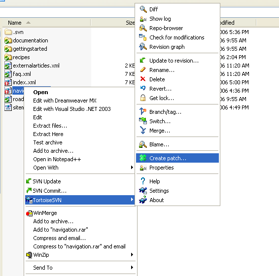

Creating and sending a patch
A patch is a file that unifies the differences of a target file. It is useful to us as we can see exactly what you changed, think about the implications and ultimately approve the patch so your changes are committed to the code repository.
We strongly encourage that you include test cases and documentation changes on your patch. If you need any help on how to test something, ask for help on the development mailing list.
Creating a patch with TortoiseSVN
After you have finished changing the files you are ready to create a patch file. To do so, right click the files or the root folder and select TortoiseSVN\Create Patch
If you don't create the patch from the root folder - then please include the path of the files you are supplying the patch for. Castle contains a lot of projects with a lot of files, telling a maintainer where to apply your patch makes their lives easier and also makes it more likely that your patch will be applied quickly. e.g. "ViewComponent.patch" "Here's a patch for \MonoRail\Castle.MonoRail.Framework\ViewComponent.cs"
If your modification includes new files or new folders you must add them before create the patch. When you add the files you show mark the files for inclusion. To add files or folders with TortoiseSVN, right click the folder or the files and select TortoiseSVN\Add.

A patch file looks like the following:
Index: navigation.xml =================================================================== --- navigation.xml (revision 2776) +++ navigation.xml (working copy) @@ -1,6 +1,6 @@ <?xml version="1.0" encoding="ISO-8859-1"?> <project> -<localimage>images/activerecord-med.png</localimage> +<localimage>images/ar_rawlogo.gif</localimage> <title>ActiveRecord</title> <body> <group type="light">
It shows the lines removed (-) and the lines included (+)
After creating the patch you can submit it using our issue tracker or sending as an attachment to our development mailing list.
Found an error? Something inaccurate? Help us improve the documentation
Generated by Castle Anakia.
Sponsored by  Castle Stronghold.
Castle Stronghold.